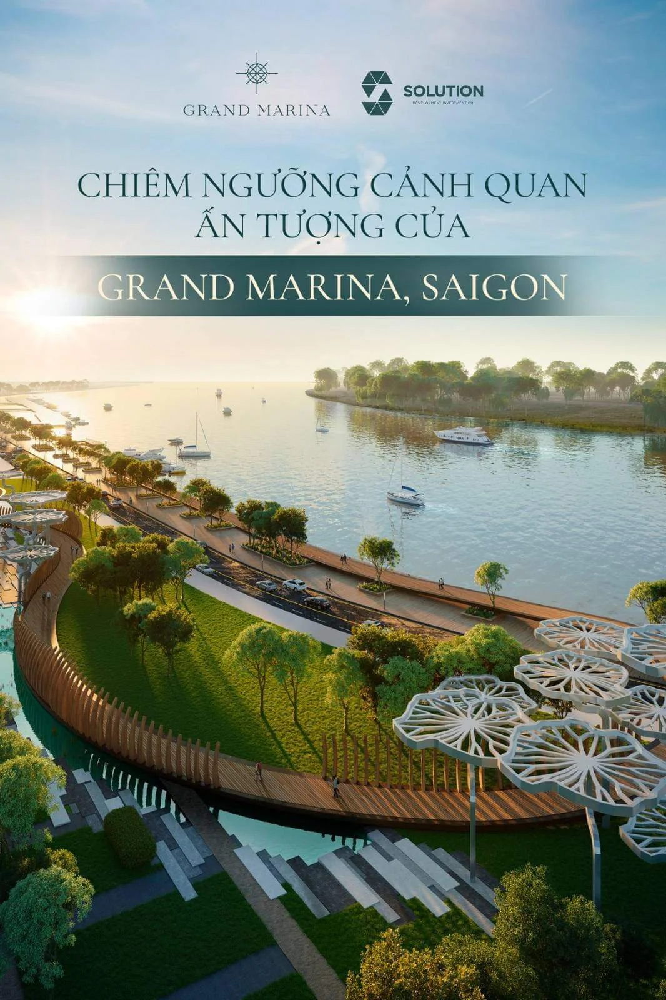
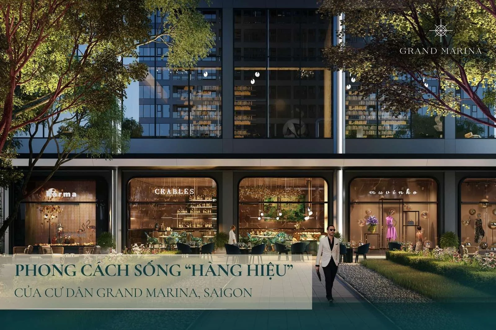

Khi tìm hiểu một dự án căn hộ hàng hiệu như Grand Marina Saigon, nhiều khách hàng nhìn vào con số "phí quản lý 8-9 USD/m²/tháng" và băn khoăn: liệu mức này có cao không, và nó khác gì so với chung cư thông thường? Câu trả lời ngắn gọn là: bạn không chỉ trả tiền cho việc dọn dẹp hành lang, mà đang trả cho cả một bộ máy vận hành chuẩn khách sạn 5 sao do Marriott International điều hành. Bài viết này sẽ bóc tách từng phần để bạn hiểu rõ tiền của mình đi đâu.
Phí quản lý Grand Marina là bao nhiêu mỗi tháng?
Phí quản lý tại Grand Marina Saigon vào khoảng 8-9 USD/m²/tháng theo thông tin tham khảo, và được chủ đầu tư Masterise Homes hỗ trợ trong 3 năm đầu sau khi nhận nhà.
Đây là mức phí dịch vụ vận hành hằng tháng, tính theo diện tích căn hộ. Với một căn 1 phòng ngủ khoảng 50-60 m², chi phí ước tính rơi vào khoảng 400-540 USD/tháng; còn căn 2 phòng ngủ 70-90 m² sẽ vào khoảng 560-810 USD/tháng. Điểm đáng chú ý là 3 năm đầu tiên khoản phí này được Masterise Homes hỗ trợ, giúp cư dân làm quen với dịch vụ trước khi chính thức chi trả.
Cần phân biệt rõ phí quản lý hằng tháng với phí bảo trì 2% (đóng một lần khi nhận nhà) — đây là hai khoản hoàn toàn khác nhau. Mọi con số trong bài đều mang tính tham khảo và có thể thay đổi theo từng giai đoạn bán hàng.

Khoản phí này thực sự bao gồm những dịch vụ nào?
Phí quản lý chi trả cho toàn bộ bộ máy dịch vụ chuẩn Marriott: lễ tân/concierge 24/7, an ninh nhiều lớp, vệ sinh khu vực chung và vận hành toàn bộ tiện ích trong tòa nhà.
Đây là những hạng mục chính mà khoản phí hằng tháng duy trì:
- Concierge & lễ tân 24/7 do đội ngũ Marriott vận hành — hỗ trợ đặt nhà hàng, taxi, dịch vụ theo yêu cầu như một khách sạn.
- An ninh nhiều lớp 24/7 — camera CCTV, kiểm soát ra vào bằng thẻ và sinh trắc học (biometric).
- Vận hành & bảo dưỡng tiện ích — hồ bơi vô cực, phòng gym Technogym, spa, sky lounge, phòng chiếu phim, kids club.
- Vệ sinh khu vực chung & cảnh quan — sảnh, hành lang, vườn ven sông, hồ trung tâm, sky garden.
- Quản lý kỹ thuật tòa nhà — thang máy, hệ thống điều hòa, điện nước, phòng cháy chữa cháy.
Nói cách khác, phí quản lý là chi phí để cả tòa nhà luôn được vận hành ở chuẩn 5 sao mỗi ngày. Bạn có thể xem chi tiết toàn bộ danh mục tiện ích trong trang Tiện ích & dịch vụ để hình dung mình đang "thuê" Marriott chăm sóc những gì.
Vì sao phí cao hơn chung cư thường — và có xứng đáng không?
Phí cao hơn vì đây là dịch vụ do một thương hiệu khách sạn quốc tế trực tiếp vận hành, chứ không phải ban quản lý thông thường — bạn trả cho tiêu chuẩn và sự ổn định của dịch vụ.
Một chung cư trung cấp tại TP.HCM thường có phí quản lý 10.000-20.000 VNĐ/m²/tháng (tương đương khoảng 0,4-0,8 USD/m²). Mức 8-9 USD/m² tại Grand Marina cao hơn nhiều, nhưng đi kèm là dịch vụ in-residence dining từ bếp JW Marriott, valet parking, housekeeping & laundry — những thứ chung cư thông thường không có. Đây cũng chính là lý do mà mô hình Branded Residences là gì? được định vị ở phân khúc riêng.
Theo các đơn vị nghiên cứu thị trường như Knight Frank và Savills (số liệu 2023-2024), bất động sản hàng hiệu thường được định giá cao hơn 25-35% so với sản phẩm tương đương không gắn thương hiệu, một phần nhờ chất lượng vận hành ổn định lâu dài. Đây là tham chiếu thị trường, không phải cam kết — giá trị thực tế phụ thuộc vào dự án, thời điểm và chính sách.
Ưu đãi 3 năm miễn phí quản lý hoạt động ra sao?
Trong 3 năm đầu sau bàn giao, chủ đầu tư Masterise Homes chịu chi phí quản lý, nên cư dân được trải nghiệm trọn vẹn dịch vụ Marriott mà chưa phải đóng khoản phí này.
Đây là chính sách hỗ trợ giúp giảm áp lực chi phí giai đoạn đầu khi mới nhận nhà. Sau 3 năm, cư dân sẽ bắt đầu đóng phí theo mức vận hành thực tế. Một điểm quan trọng về dài hạn: hợp đồng vận hành với Marriott có thời hạn 20 năm, và sau giai đoạn ban đầu, ban quản trị (đại diện cư dân) có quyền gia hạn hoặc thay đổi đơn vị vận hành.
Bảng dưới đây tóm tắt cách khoản phí thay đổi theo thời gian (số liệu tham khảo):
| Giai đoạn | Bên chi trả phí quản lý | Ghi chú |
|---|---|---|
| 3 năm đầu sau bàn giao | Masterise Homes hỗ trợ | Cư dân trải nghiệm dịch vụ, chưa đóng phí |
| Từ năm thứ 4 trở đi | Cư dân chi trả | Khoảng 8-9 USD/m²/tháng (tham khảo) |
| Trong suốt 20 năm | Marriott vận hành | Ban quản trị có quyền gia hạn/đổi đơn vị sau đó |
Lưu ý mức phí và thời hạn hỗ trợ có thể điều chỉnh theo công bố chính thức của chủ đầu tư theo từng giai đoạn — bạn nên xác nhận lại trước khi ký.

Phí quản lý liên quan gì đến an ninh và quyền lợi Bonvoy?
Khoản phí này duy trì hệ thống an ninh nhiều lớp 24/7 và là một phần của hệ sinh thái dịch vụ Marriott, trong đó có cả quyền lợi Marriott Bonvoy dành cho cư dân.
Một phần đáng kể của phí quản lý đi vào hệ thống bảo vệ: kiểm soát ra vào bằng thẻ và sinh trắc học, camera giám sát, đội an ninh túc trực — chi tiết đầy đủ có trong bài An ninh & riêng tư: Bảo mật nhiều lớp cho giới thượng lưu. Đây là yếu tố mà giới khách hàng cao cấp đặc biệt coi trọng.
Ngoài ra, việc sống trong một dự án do Marriott vận hành còn mở ra hệ sinh thái Marriott Bonvoy cho cư dân: Quyền lợi tại 8.000+ khách sạn — ưu đãi và tích điểm tại hơn 8.000 khách sạn Marriott trên toàn cầu. Đây là giá trị "mềm" đi kèm trải nghiệm sống mà phí quản lý gián tiếp duy trì.
Những lưu ý trước khi tính toán chi phí sở hữu
Phí quản lý chỉ là một phần trong tổng chi phí sở hữu — bạn nên cộng đủ cả VAT, phí bảo trì 2% một lần và các khoản khác để có bức tranh đầy đủ.
Khi tính tổng chi phí về một căn hộ tại Grand Marina, hãy lưu ý các khoản sau:
- VAT 10% trên giá trị căn hộ.
- Phí bảo trì 2% đóng một lần khi nhận nhà (khác phí quản lý hằng tháng).
- Phí trước bạ 0,5% khi sang tên.
- Phí quản lý ~8-9 USD/m²/tháng, được hỗ trợ 3 năm đầu.
Việc nắm rõ từng khoản giúp bạn lập kế hoạch tài chính chính xác, nhất là nếu mua để cho thuê — vì khi đó phí quản lý cũng là một biến số trong bài toán dòng tiền. Bạn có thể tham khảo thêm các tiện ích "đắt giá" được duy trì bằng khoản phí này như Hồ bơi vô cực Grand Marina: View sông Sài Gòn tầng cao. Đây là thông tin chung mang tính tham khảo, không phải tư vấn riêng cho từng trường hợp — bạn nên xem kỹ hợp đồng và bảng giá trước khi quyết định.

Tóm lại: phí quản lý mua gì cho bạn?
Tóm lại, ~8-9 USD/m²/tháng tại Grand Marina là chi phí để duy trì trải nghiệm sống chuẩn khách sạn 5 sao Marriott mỗi ngày, với 3 năm đầu được chủ đầu tư hỗ trợ.
Bạn không chỉ trả cho việc bảo trì tòa nhà, mà cho concierge 24/7, an ninh nhiều lớp, đội ngũ housekeeping, và quyền vận hành bởi một thương hiệu quốc tế trong suốt hợp đồng 20 năm. Với khách mua để ở, đó là sự an tâm và đẳng cấp; với khách đầu tư, đó là yếu tố giúp giữ giá trị và sức hấp dẫn cho thuê của căn hộ theo thời gian.
Ghi chú
Thông tin về giá, diện tích và tiến độ có thể thay đổi theo công bố chính thức từ chủ đầu tư. Vui lòng liên hệ Zalo 0903 475 802 để nhận tài liệu và bảng giá mới nhất.